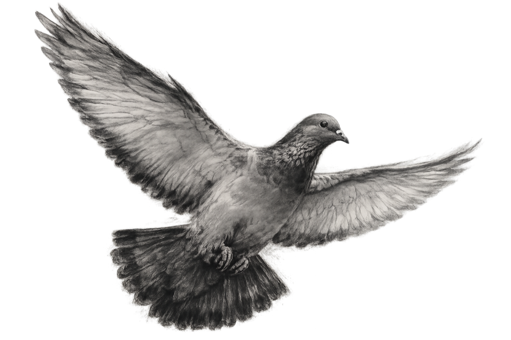
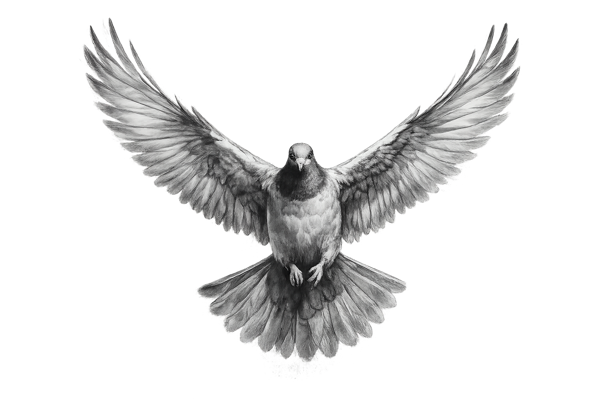
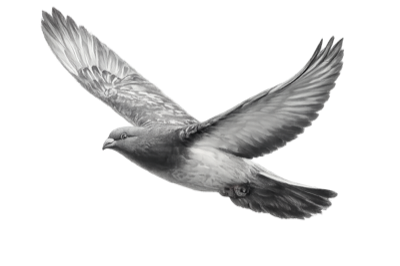
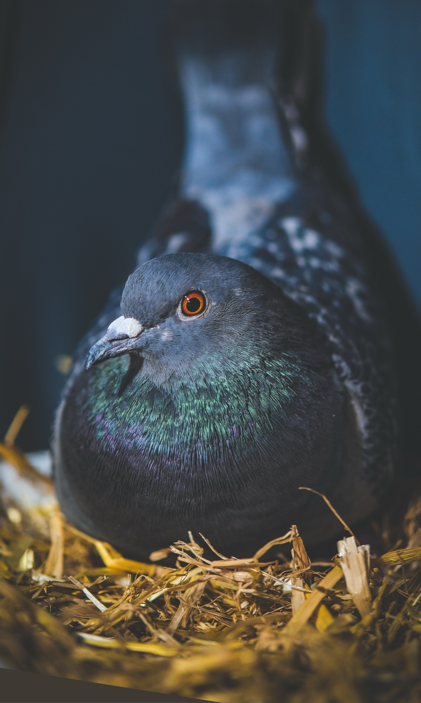

PETITION TO THE CITY COUNCIL AND THE CITY PARLIAMENT OF LUCERNE
For sustainable and humane pigeon management in Lucerne
A comprehensive approach based on managed pigeon lofts, controlled feeding, systematic egg replacement and professional care.
See What We Are Calling For
THE SITUATION IN LUCERNE
Lucerne’s current approach does not address the root of the problem.
An estimated 2,500 feral pigeons live in Lucerne. The city operates two pigeon lofts with a total of around 180 nesting places. However, the pigeons are not fed in the lofts, while feeding them in public is subject to cantonal authorisation.
Without controlled feeding, the pigeons cannot be reliably drawn into and retained in the lofts. Most of the population therefore continues to search for food in public spaces, often approaching people for scraps, while living and breeding in unsuitable locations such as beneath bridges, on other infrastructure, and on balconies and rooftops.
As a result, many pigeons suffer from hunger, malnutrition, untreated injuries and disease. Living and searching for food in public spaces also exposes them to traffic and deliberate harm, including being chased, kicked or otherwise mistreated.
HOW WE GOT HERE
From valued domestic animals to unwanted city pigeons.
Feral pigeons are the often-unwanted descendants of birds that were bred, used, valued and, in some cultures, even revered for thousands of years. Their hardiness, adaptability, strong pair bonds and loyalty to their home made them useful domestic animals. People kept them for their nutrient-rich manure, meat and eggs, and also used them to carry messages.
Selective breeding gave domestic pigeons a strong reproductive drive. Under suitable conditions, they can raise several broods throughout much of the year. When many of their former uses disappeared, escaped, lost and abandoned pigeons were left behind. Their descendants now live as feral pigeons in towns and cities. Even today, urban populations are supplemented by lost or abandoned racing, fancy and other domestic pigeons.
As descendants of cliff-dwelling birds, they use buildings, bridges, balconies and rooftops as substitutes for natural rock ledges. They can survive in extremely difficult conditions and continue to breed even when suitable food is scarce. This can lead to high local populations, contamination and conflicts over the use of public and private spaces.
These conflicts have also given rise to many misconceptions. Feral pigeons are often portrayed as dangerous carriers of disease or as animals whose droppings inevitably destroy buildings. Both claims require a more nuanced assessment: the health risk to the general public is far lower than is often suggested, and the effect of pigeon droppings depends greatly on the material and the specific conditions involved.
WHY THE CURRENT APPROACH FALLS SHORT
The pigeon problem is human-made – and it can be solved.
The current situation affects residents, property owners, local businesses and the pigeons themselves. Contamination, high cleaning costs and animal suffering are not unavoidable features of urban life. They are the result of an incomplete pigeon management system.
Pigeon lofts alone are not enough. Without controlled feeding, systematic egg replacement, health monitoring and professional supervision, the birds cannot be reliably drawn into the lofts and the population cannot be managed effectively.
THE AUGSBURG MODEL
Managed pigeon lofts instead of treating the symptoms.
A sustainable pigeon management system based on the Augsburg Model combines several coordinated measures. Its effectiveness depends on implementing them as one comprehensive concept.
01
Managed pigeon lofts
Professionally managed pigeon lofts are established at suitable locations and urban hotspots.
02
Controlled feeding and care
Species-appropriate feeding draws the pigeons into the lofts and encourages them to remain there. Regular health monitoring and basic medical care support a healthier population.
03
Systematic egg replacement
Eggs are regularly replaced with dummy eggs, allowing the population to be reduced gradually and humanely.
04
Closing unsuitable nesting sites
Once pigeons have been successfully established in managed lofts, unsuitable and uncontrolled nesting sites can be made inaccessible professionally and without harming the animals.
05
Cleaning and hygiene
Pigeons spend much of their time inside the lofts, where most droppings accumulate and can be removed safely and professionally.
06
Public information and coordination
Clear public information, coordinated responsibilities and feeding restrictions outside the lofts support the effectiveness of the system.
Why killing pigeons is not a sustainable solution
Culling does not address the causes of the pigeon problem. Reduced populations can recover through immigration and the increased availability of food and nesting sites. Killing therefore provides only temporary relief while causing avoidable animal suffering.
BENEFITS FOR EVERYONE
A managed pigeon population benefits animals, residents and the city.
Cleaner public spaces
Fewer droppings on façades, balconies, roofs and in public spaces.
A large proportion of the droppings accumulates inside the managed lofts, where it can be removed safely and professionally.
Lower long-term costs
Reduced expenditure on cleaning, maintenance and deterrent measures.
A coordinated long-term strategy is more economical than repeatedly treating the symptoms.
Improved animal welfare
Humane population control through systematic egg replacement.
Less hunger and malnutrition, together with earlier care for injured and sick pigeons.
A responsible model for Lucerne
Lucerne can adopt a proven and comprehensive approach.
A solution that brings together residents, businesses, urban cleanliness and animal welfare.
FURTHER READING
Learn more about humane municipal pigeon management.
Our proposed approach is based on the Augsburg Model and on established recommendations for effective and animal-welfare-friendly municipal pigeon management.
The English-language guide Management of City Pigeons was published by Menschen für Tierrechte – Bundesverband der Tierversuchsgegner e. V. (a Germany-based animal rights organisation). It provides practical guidance for municipalities on implementing a comprehensive and humane pigeon management system.
Read the English Guide
WHAT OUR PETITION CALLS FOR
Lucerne needs a comprehensive and humane pigeon management system.
We call on the City of Lucerne to introduce a sustainable pigeon management system based on the Augsburg Model. This includes sufficiently large managed pigeon lofts, controlled feeding, systematic egg replacement, regular health monitoring and professional supervision.
The aim is to gradually and humanely reduce the pigeon population, improve the health and welfare of the birds, and reduce contamination and conflicts in public and private spaces.
LUCERNE SECTION
About Us
We are the Sektion Luzern of Stadttauben Schweiz, a non-profit animal welfare organisation. Since our founding in 2025, we have been working towards a humane and sustainable approach to feral pigeons. Through public education and political advocacy, we promote modern and effective pigeon management in Lucerne.

Livia

Charlotte

Debby